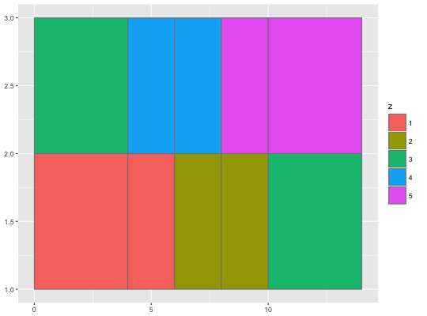

geom_raster(mapping = NULL, data = NULL, stat = "identity", position = "identity", hjust = 0.5, vjust = 0.5, interpolate = FALSE, show.legend = NA, inherit.aes = TRUE, ...)geom_rect(mapping = NULL, data = NULL, stat = "identity", position = "identity", show.legend = NA, inherit.aes = TRUE, ...)geom_tile(mapping = NULL, data = NULL, stat = "identity", position = "identity", show.legend = NA, inherit.aes = TRUE, ...)
aes or
aes_. If specified and inherit.aes = TRUE (the
default), is combined with the default mapping at the top level of the
plot. You only need to supply mapping if there isn't a mapping
defined for the plot.TRUE interpolate linearly, if FALSE
(the default) don't interpolate.NA, the default, includes if any aesthetics are mapped.
FALSE never includes, and TRUE always includes.FALSE, overrides the default aesthetics,
rather than combining with them. This is most useful for helper functions
that define both data and aesthetics and shouldn't inherit behaviour from
the default plot specification, e.g. borders.layer. There are
three types of arguments you can use here:
color = "red" or size = 3.
stat associated with the layer.
geom_rect and geom_tile do the same thing, but are
parameterised differently. geom_rect uses the locations of the four
corners (xmin, xmax, ymin and ymax).
geom_tile uses the center of the tile and its size (x,
y, width, height). geom_raster is a high
performance special case for when all the tiles are the same size.
geom_tile understands the following aesthetics (required aesthetics are in bold):
x
y
alpha
colour
fill
linetype
size
# The most common use for rectangles is to draw a surface. You always want # to use geom_raster here because it's so much faster, and produces # smaller output when saving to PDF ggplot(faithfuld, aes(waiting, eruptions)) + geom_raster(aes(fill = density))# Interpolation smooths the surface & is most helpful when rendering images. ggplot(faithfuld, aes(waiting, eruptions)) + geom_raster(aes(fill = density), interpolate = TRUE)# If you want to draw arbitrary rectangles, use geom_tile() or geom_rect() df <- data.frame( x = rep(c(2, 5, 7, 9, 12), 2), y = rep(c(1, 2), each = 5), z = factor(rep(1:5, each = 2)), w = rep(diff(c(0, 4, 6, 8, 10, 14)), 2) ) ggplot(df, aes(x, y)) + geom_tile(aes(fill = z))ggplot(df, aes(x, y)) + geom_tile(aes(fill = z, width = w), colour = "grey50")ggplot(df, aes(xmin = x - w / 2, xmax = x + w / 2, ymin = y, ymax = y + 1)) + geom_rect(aes(fill = z, width = w), colour = "grey50")
# Justification controls where the cells are anchored df <- expand.grid(x = 0:5, y = 0:5) df$z <- runif(nrow(df)) # default is compatible with geom_tile() ggplot(df, aes(x, y, fill = z)) + geom_raster()# zero padding ggplot(df, aes(x, y, fill = z)) + geom_raster(hjust = 0, vjust = 0)# Inspired by the image-density plots of Ken Knoblauch cars <- ggplot(mtcars, aes(mpg, factor(cyl))) cars + geom_point()cars + stat_bin2d(aes(fill = ..count..), binwidth = c(3,1))cars + stat_bin2d(aes(fill = ..density..), binwidth = c(3,1))cars + stat_density(aes(fill = ..density..), geom = "raster", position = "identity")cars + stat_density(aes(fill = ..count..), geom = "raster", position = "identity")